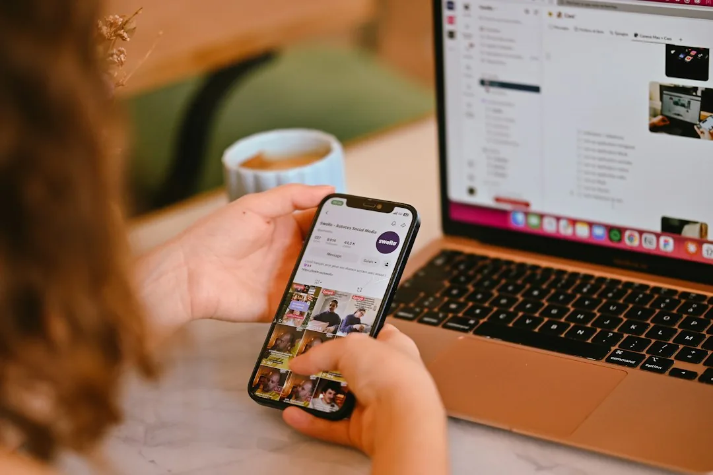
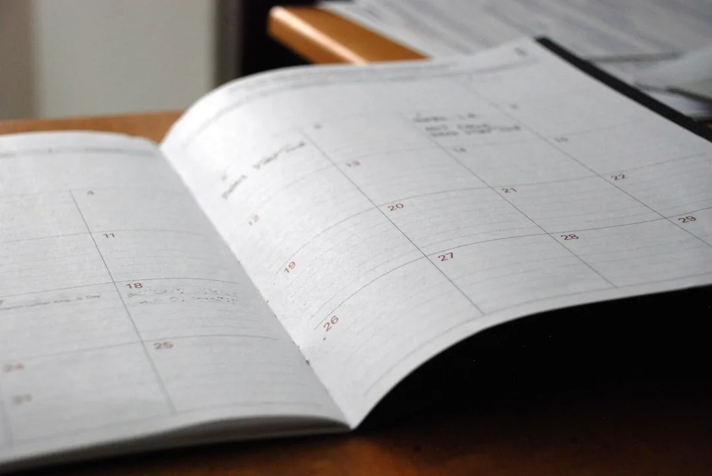
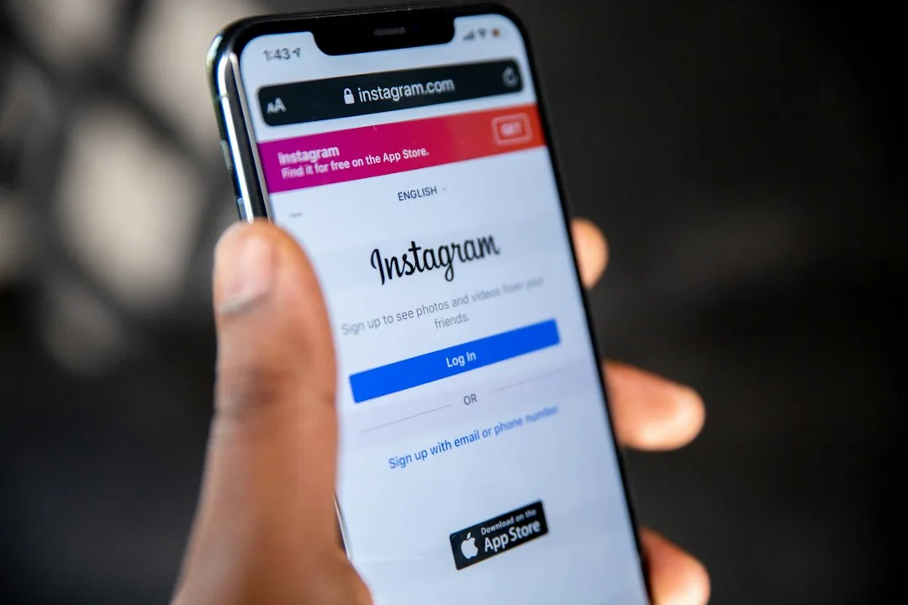

Quanto Custa um Social Media em 2026? Tabela de Preços

Você pede três orçamentos para cuidar do Instagram da empresa e recebe três números que parecem de mercados diferentes: R$ 600, R$ 1.800 e R$ 4.500 por mês. A primeira reação é achar que alguém está cobrando caro demais. Quase sempre, os três estão orçando trabalhos diferentes com o mesmo nome.
Saber quanto custa um social media depende de entender o que está dentro de cada proposta. Doze artes por mês com legenda pronta são uma coisa. Planejamento, vídeos editados, respostas a comentários e relatório mensal são outra, bem diferente.
Este guia mostra quanto custa um social media em 2026 nos três modelos mais comuns: freelancer, agência e funcionário contratado. Também explica o que puxa o preço para cima ou para baixo, o que costuma entrar no pacote e o que fica de fora. Assim você compara propostas sem cair na armadilha do mais barato.
Quanto custa um social media em 2026: a resposta direta
Os valores abaixo são faixas que encontramos no mercado brasileiro em 2026, para pequenas e médias empresas. Eles variam por região, experiência e escopo, então use a tabela como ponto de partida, e não como preço fechado.
| Modelo de contratação | Faixa mensal comum | O que costuma incluir |
|---|---|---|
| Freelancer iniciante | R$ 500 a R$ 1.200 | 8 a 12 posts com arte e legenda, em uma ou duas redes |
| Freelancer experiente | R$ 1.200 a R$ 2.500 | Planejamento mensal, 12 a 20 posts, stories e relatório simples |
| Agência (pacote básico a intermediário) | R$ 1.500 a R$ 4.000 | Estratégia, calendário, design, legendas, agendamento e relatório |
| Agência (pacote completo) | R$ 4.000 a R$ 10.000 ou mais | Tudo acima, mais vídeos editados, atendimento a comentários e mais redes |
| Social media com carteira assinada (CLT) | R$ 4.000 a R$ 7.000 de custo total | Dedicação exclusiva, com salário somado a encargos e benefícios |
A tabela mostra só o custo de quem faz o trabalho. Nenhum desses valores inclui o dinheiro de anúncio, que vai direto para a plataforma. Voltamos a esse ponto mais adiante, porque é a fonte de muita confusão na hora de comparar orçamentos.
Quanto cobra um social media por post
Alguns profissionais cobram por peça em vez de pacote mensal. Nesse formato, uma arte estática costuma sair entre R$ 40 e R$ 150. Um carrossel (post com várias imagens que a pessoa passa para o lado) fica entre R$ 80 e R$ 250, e um vídeo curto editado, como um Reels, vai de R$ 100 a R$ 400.
A cobrança por post funciona para quem precisa de material avulso, como uma campanha de data comemorativa. Para presença contínua, o pacote mensal costuma sair mais barato por peça quando o volume cresce. E ele inclui o planejamento, que escolhe temas e datas pensando no que o seu cliente procura, em vez de postar o que der na hora.
Os três orçamentos do começo, lado a lado
Voltando aos três números da abertura, veja como eles costumam se explicar quando a proposta é detalhada.
O orçamento de R$ 600 geralmente é de um freelancer em início de carreira. Ele entrega 8 artes estáticas por mês com legenda, só no Instagram, a partir de fotos que a própria empresa manda. Não há relatório nem resposta a comentários.
O de R$ 1.800 costuma vir de um freelancer experiente ou de uma agência pequena. Entram um planejamento mensal, 12 posts misturando arte e carrossel, alguns stories por semana e um relatório simples no fim do mês.
O de R$ 4.500 normalmente é o pacote de uma agência com equipe. Ele traz estratégia, 16 a 20 posts com 4 a 8 vídeos editados, Instagram e LinkedIn, resposta a comentários em horário comercial e uma reunião mensal de resultados.
Nenhum dos três está errado. Cada um responde de um jeito à pergunta "quanto custa um social media", porque cada um entrega uma quantidade diferente de trabalho. O erro é comparar o primeiro com o terceiro como se fossem o mesmo serviço.

O que define quanto cobra um social media
Duas propostas com o mesmo número de posts podem ter preços muito diferentes. Os fatores abaixo explicam a maior parte dessa diferença, e conhecê-los ajuda você a ler qualquer orçamento.
Número de redes e frequência de posts
Cuidar só do Instagram é diferente de cuidar de Instagram, Facebook, LinkedIn e TikTok ao mesmo tempo. Cada rede tem formato, linguagem e público próprios, e adaptar o conteúdo dá trabalho. A frequência também pesa: 8 posts por mês e 20 posts por mês são escopos bem distintos.
Tipo de conteúdo
Arte estática é o formato mais rápido de produzir. Carrossel exige roteiro e várias telas. Vídeo exige roteiro, gravação ou banco de imagens, edição, legenda e trilha. Quanto mais vídeo no pacote, maior o preço, e hoje os vídeos curtos estão entre os formatos que as plataformas mais mostram para quem ainda não segue o perfil.
Quem produz fotos e vídeos
Se a empresa envia as fotos e os vídeos brutos, o social media só edita e publica. Se ele precisa ir até a empresa gravar, ou contratar fotógrafo, o custo sobe bastante. Muitas propostas baratas pressupõem que o material bruto vem do cliente, e isso nem sempre está escrito.
Atendimento da comunidade
Responder a comentários e mensagens diretas, os chamados directs, é um trabalho diário. Algumas propostas incluem esse atendimento, outras o deixam com a empresa. Esse item sozinho pode mudar o orçamento em centenas de reais, porque exige presença todos os dias.
Estratégia, relatório e reuniões
Esse é o ponto que mais separa quanto custa um social media júnior de quanto custa um sênior. O iniciante tende a entregar execução: arte, legenda e agendamento. Um profissional sênior ou uma agência entrega também estratégia, ou seja, decide temas, formatos e objetivos com base nos números do mês anterior. Relatório mensal e reunião de alinhamento entram aqui.
Experiência e região
Por fim, profissionais com portfólio forte e cases comprovados cobram mais, assim como acontece em qualquer serviço. Capitais e grandes centros também tendem a ter preços acima dos praticados em cidades menores.
Dica de quem faz orçamento disso toda semana: peça que cada proposta detalhe o número de posts por formato (arte, carrossel, vídeo), as redes incluídas e se o atendimento de comentários está dentro. Com esses três itens na mesa, a diferença de preço quase sempre se explica sozinha.
Freelancer, agência ou contratado: quanto custa cada modelo
Os três caminhos funcionam, e cada um faz mais sentido num momento diferente da empresa. A escolha depende do volume de conteúdo, do quanto você quer acompanhar o trabalho e do orçamento disponível.
Freelancer
O freelancer é o caminho mais barato para começar, e é nele que a resposta para quanto custa um social media fica mais baixa. Ele costuma atender vários clientes e entrega um pacote fechado de posts. A vantagem é o preço e o contato direto com quem faz o trabalho.
O cuidado está na dependência de uma pessoa só. Se o freelancer adoece, viaja ou some, a produção para. Também é comum que ele domine bem o design e menos a estratégia, ou o contrário. Por isso, olhar o portfólio e conversar com clientes atuais ajuda a reduzir o risco.
Agência
A agência custa mais porque entrega uma equipe: estrategista, designer, redator e, em pacotes maiores, editor de vídeo. Há processo, substituição quando alguém sai de férias e, em geral, relatório estruturado. Quando a empresa também anuncia, a agência pode integrar os posts normais, que não são pagos, com os anúncios, o que costuma melhorar o resultado das duas frentes.
Social media contratado
Contratar um social media com carteira assinada, pela CLT (Consolidação das Leis do Trabalho), dá dedicação exclusiva e conhecimento profundo do negócio. Em compensação, o custo real vai muito além do salário. Encargos trabalhistas, férias, 13º e benefícios costumam somar algo entre 50% e 100% do salário. Na prática, um salário de R$ 3.000 custa à empresa algo entre R$ 4.500 e R$ 6.000 por mês. A variação depende de como a empresa paga impostos (Simples Nacional ou Lucro Presumido, por exemplo), e o seu contador sabe dizer qual é o seu caso. Também é preciso comprar ferramentas, como banco de imagens e programas de edição, e lidar com o fato de uma única pessoa raramente dominar estratégia, design e vídeo no mesmo nível.
| Critério | Freelancer | Agência | Contratado (CLT) |
|---|---|---|---|
| Custo mensal típico | R$ 500 a R$ 2.500 | R$ 1.500 a R$ 10.000 | R$ 4.000 a R$ 7.000, sem contar ferramentas |
| Quem faz o trabalho | Uma pessoa | Equipe com funções separadas | Uma pessoa dedicada |
| Estratégia e relatório | Varia muito | Em geral incluídos | Depende do perfil contratado |
| Risco de parar a produção | Alto | Baixo | Médio (férias, saída) |
| Integração com anúncios | Rara | Comum | Depende do perfil |
| Melhor para | Começar com orçamento curto | Empresa que quer resultado sem montar equipe | Volume alto e conteúdo diário |
Se você quer entender quanto custa um social media para o seu caso, com o escopo certo para o momento da empresa, fale com a equipe da Drive Digital. A gente monta a proposta mostrando post por post o que está incluído.
O que entra no preço da gestão (e o que fica fora)
Esta é a parte que mais gera desencontro entre o que o cliente espera e o que o profissional entrega. Antes de assinar, confira item por item.
O que costuma estar incluído
Na maioria das propostas de gestão de redes sociais, o preço cobre:
- Planejamento mensal, com o calendário de posts e os temas de cada semana;
- Criação das artes, seguindo a identidade da marca;
- Legendas e hashtags, revisadas antes de publicar;
- Agendamento e publicação nos dias e horários combinados;
- Relatório, com alcance (quantas pessoas viram os posts), engajamento (quantas curtiram, comentaram, salvaram ou compartilharam) e crescimento do perfil.
O que normalmente fica fora
O primeiro item que fica de fora, e o que mais confunde, é o impulsionamento. O dinheiro para turbinar um post ou rodar um anúncio vai para a Meta, o Google ou o TikTok, e não para o social media. Ele é uma verba separada, e o artigo sobre quanto custa tráfego pago mostra como calcular esse valor.
Além da verba, a gestão de anúncios costuma ser outro serviço. Criar e otimizar campanhas pagas exige conhecimento diferente da produção de conteúdo, e por isso muitas empresas contratam uma agência de tráfego pago ou um gestor de tráfego, o profissional especializado só em anúncios pagos.
Também ficam fora, na maioria das vezes, a produção de fotos e vídeos profissionais, o atendimento de comentários e directs nos pacotes básicos e a criação da identidade visual. Se a marca ainda não tem cores, fontes e regras definidas, o social media vai improvisar. Vale resolver isso antes, e o nosso guia sobre identidade visual explica o que precisa estar pronto.
Atenção ao contrato: combine por escrito quem é o dono das artes, das fotos e dos vídeos produzidos. A Lei de Direitos Autorais protege quem cria a obra, e sem uma cláusula de cessão a empresa pode ter dificuldade para reutilizar o material depois do fim do contrato. Garanta também que os acessos de administrador das contas fiquem em nome da empresa, e não do profissional.
Como saber se o preço vale a pena
Comparar só o valor mensal leva a escolhas ruins. O mais barato pode sair caro se entregar posts que ninguém vê, e o mais caro pode não fazer sentido se a empresa não tem como aproveitar o que recebe.
Perguntas para fazer antes de contratar
- Quantos posts por mês, em quais formatos e em quais redes?
- Quem produz as fotos e vídeos, e quantas gravações estão previstas?
- O atendimento de comentários e directs está incluído? Em que horário?
- Que números vão aparecer no relatório, e com que frequência?
- Quantas rodadas de ajuste cada peça pode ter?
- Há multa ou prazo mínimo de contrato?
Sinais de alerta
Desconfie de quem promete número de seguidores em prazo curto. Seguidor comprado ou atraído por sorteio sem critério não vira cliente e ainda derruba o alcance dos posts, porque a plataforma entende que o conteúdo não interessa a quem segue o perfil. Desconfie também de pacotes muito baratos com volume muito alto. Vinte vídeos editados por R$ 500 dificilmente terão qualidade.
Como medir o retorno

Para a maioria das empresas de serviço, curtidas não pagam conta. Os números que importam são contatos gerados, mensagens no WhatsApp, pedidos de orçamento e visitas ao site vindas das redes. Defina com o social media, logo no primeiro mês, quais desses números serão acompanhados. Quando o perfil passa a gerar oportunidades de venda, fica fácil saber se o investimento compensa.
Uma conta simples ajuda a decidir:
- Some o que você paga no mês: honorário mais verba de anúncio (por exemplo, R$ 2.000).
- Conte quantos clientes novos vieram das redes nesse mês (por exemplo, 2).
- Divida um pelo outro: cada cliente custou R$ 1.000.
- Compare com o lucro que um cliente novo deixa na empresa. Se ele deixa mais do que custou, a conta fecha.
Esse raciocínio mostra, melhor do que qualquer tabela, se quanto custa um social media cabe de verdade no seu negócio.
Dê tempo ao trabalho, mas com prazo combinado. Três meses costumam ser suficientes para avaliar se o conteúdo encontrou o público certo. Se nesse período os números de contato não se mexeram, reveja com o profissional o escopo e também a oferta que está sendo divulgada, antes de trocar de fornecedor. Às vezes o problema está no que se vende, e não no post.
Quer redes sociais que trabalhem junto com o seu site e os seus anúncios? Conheça o serviço de redes sociais da Drive Digital e peça uma proposta com escopo detalhado.
Perguntas frequentes sobre quanto custa um social media
Quanto cobra um social media iniciante?
Um social media iniciante costuma cobrar entre R$ 500 e R$ 1.200 por mês, por um pacote de 8 a 12 posts com arte e legenda em uma ou duas redes. Em geral, a estratégia e o relatório são mais simples nessa faixa.
Quanto custa um social media para pequena empresa?
Para uma pequena empresa, o mais comum é investir entre R$ 1.200 e R$ 3.000 por mês, com um freelancer experiente ou o pacote básico de uma agência. Esse valor não inclui a verba de anúncios, que é paga à parte para a plataforma.
O impulsionamento está incluído no preço do social media?
Normalmente não. O honorário paga o trabalho de planejar e produzir o conteúdo. O dinheiro do impulsionamento vai para a Meta, o Google ou o TikTok e é combinado separadamente, assim como a gestão das campanhas pagas.
É melhor contratar freelancer ou agência?
O freelancer compensa para começar com orçamento curto e pouco volume. A agência compensa quando a empresa quer estratégia, vídeos e integração com anúncios sem depender de uma pessoa só. O critério é o escopo de que você precisa, não só o preço.
Quanto tempo leva para ver resultado nas redes sociais?
Os primeiros sinais, como alcance e engajamento, costumam aparecer em dois ou três meses de publicação constante. Resultado em vendas depende do negócio, da oferta e de haver anúncios junto com os posts normais.
O preço certo é o que cabe no escopo de que você precisa
Não existe um valor único para quanto custa um social media. Existe o escopo de que a sua empresa precisa agora: número de redes, quantidade e tipo de post, quem produz o material bruto e se há atendimento de comentários. Com esses itens definidos, as propostas ficam comparáveis e o preço deixa de assustar.
Avalie os números em três meses, mas escolha um escopo que você consiga manter por pelo menos seis, porque rede social funciona com constância. Separe a verba de anúncio do honorário de gestão e combine desde o início quais números vão provar que o investimento está dando retorno.
Se quiser uma proposta clara, com cada post e cada entrega descritos, converse com a Drive Digital. A gente explica quanto custa um social media para o seu caso e o que esperar dos primeiros meses.